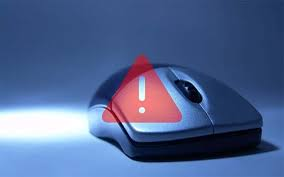
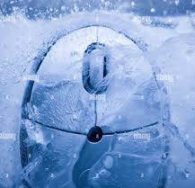
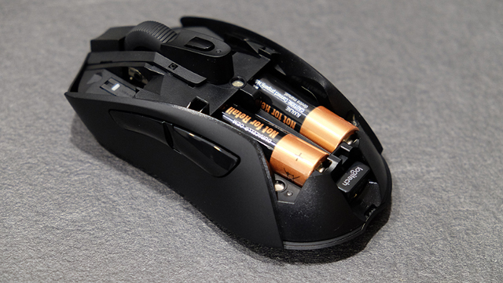
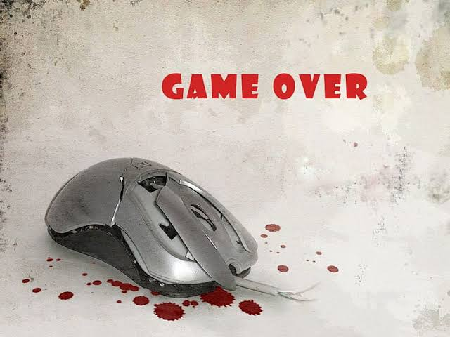
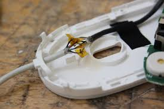
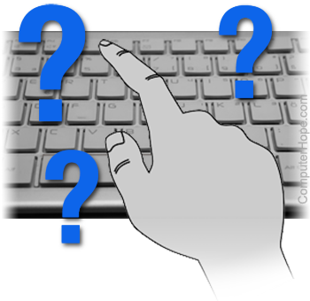

Common PC Peripheral Problems
Mouse Common Problems
Slow Or Fast Movement Of Cursor
 Too fast or too slow cursor movements can be controlled from the control panel of your PC. Simple, go to the control panel, click on the mouse option, and navigate to the pointers option tab. It can easily set the speed of your cursor. I would suggest you keep it in the middle. Don’t forget to click the Ok and Apply button after setting up cursor speed.
Freezing Of Mouse Cursor
 Sometimes mouse cursor totally stops working. This issue is also known as a frozen cursor. This usually happens when your PC has an extra load and hangs more often. Wait for some time and refresh your PC by pressing the Fn+f5 keys together. You can try clearing all the programs running in the background and restart the PC.
Faulty Batteries
 This issue is encountered in wireless mice as they run on batteries. If you bought a new mouse and the batteries are OK, ensure a neat and clean connection of the batteries. New mice are often on Stand-By mode. To get out of standby mode, just make 2-3 clicks simultaneously, and you are good to go.
Mouse Won't Work At All
 This issue is very rare but is not a minor one. The reason might be the outdated driver that is causing the issue. You need to re-install/update your mouse driver to fix the issue. Also, don’t download the driver from any third-party website. Visit the manufacturer’s site and download the right and latest mouse driver.
Cable Issues
 If your mouse is too old, then you might face this issue due to aged components. The other common hardware issues can be worn-out cables, faulty Ports. The better solution to this issue is to use any other device in ports to check if they are functioning properly. If your ports are working well, then you need to replace your older mouse.
Keyboard Common Problems
Unresponsive Keyboard
 If the keyboard was working fine before but suddenly stops working altogether, this indicates a power or software issue. Start with the basics: If you have a wired keyboard, check that your connection to the computer is stable and in place. Unplug it and plug it back in again if necessary. For wireless keyboards, check that they still have battery life/new batteries and plug them into a source of power to see if that addresses the issue. On the software side, if you have a wireless keyboard, try disabling the Bluetooth connection and re-enabling it to see if this helps. If not, look to see if you need any updates, and install them. You should also go to the Device Manager and the Keyboards sections to check if any drivers need to be individually updated with a new version. Even if there are no updates waiting, unplug all other accessories from your computer except those you need, and reboot. A full restart without any other connections can fix unresponsive keyboards. If all else fails, run a virus check: Some malware can interfere with accessories like keyboards and prevent them from working.
The keyboard turns on but won’t function at all
 If you see the indicator lights turn on but can’t get any response out of the keyboard, take a look at your connection first. For wired keyboards, check to see if it’s plugged into the right kind of USB port: Different keyboards are designed for different USB protocols and may not be compatible with all ports even if they can turn on. For wireless models, double-check the Bluetooth connection, and try disabling then re-connecting Bluetooth to see if this makes a difference.
If everything checks out, it’s time to head to your keyboard drivers. Search for Device Manager and open its window. Find and expand the Keyboards section to see your current drivers. Right-click to uninstall the drivers, then reboot your computer. When you log back in, Windows should automatically find and download the right drivers for your keyboard.
If you see the indicator lights turn on but can’t get any response out of the keyboard, take a look at your connection first. For wired keyboards, check to see if it’s plugged into the right kind of USB port: Different keyboards are designed for different USB protocols and may not be compatible with all ports even if they can turn on. For wireless models, double-check the Bluetooth connection, and try disabling then re-connecting Bluetooth to see if this makes a difference.
If everything checks out, it’s time to head to your keyboard drivers. Search for Device Manager and open its window. Find and expand the Keyboards section to see your current drivers. Right-click to uninstall the drivers, then reboot your computer. When you log back in, Windows should automatically find and download the right drivers for your keyboard.
keys keep jamming while typing
 Jamming keys are a primary sign that your keyboard is dirty and needs to be cleaned. There are many levels of cleaning: Some users like to spray in jets of compressed air and hope for the best. We’re not big fans of that option, because it can drive crumbs even deeper into the keyboard than before, and we prefer to use a vacuum brush accessory to suck debris out entirely.
But for serious jamming issues, the best solution is to take off the keys and do a thorough cleaning.
Jamming keys are a primary sign that your keyboard is dirty and needs to be cleaned. There are many levels of cleaning: Some users like to spray in jets of compressed air and hope for the best. We’re not big fans of that option, because it can drive crumbs even deeper into the keyboard than before, and we prefer to use a vacuum brush accessory to suck debris out entirely.
But for serious jamming issues, the best solution is to take off the keys and do a thorough cleaning.
Each key press causes repeats
 If every keypress is typing several characters when it should be typing only one, typing quickly becomes an annoying problem. If the key itself feels stuck, then it’s usually an issue of grime or dirt. Unplug the keyboard, and carefully pop the key off. Use a cloth with a small amount of rubbing alcohol or other solvent to wipe the key and the surrounding area.
We also advise heading to keyboard settings and trying to adjust keyboard sensitivity and related features to see if you can match your typing style and sensitivity more accurately.
If every keypress is typing several characters when it should be typing only one, typing quickly becomes an annoying problem. If the key itself feels stuck, then it’s usually an issue of grime or dirt. Unplug the keyboard, and carefully pop the key off. Use a cloth with a small amount of rubbing alcohol or other solvent to wipe the key and the surrounding area.
We also advise heading to keyboard settings and trying to adjust keyboard sensitivity and related features to see if you can match your typing style and sensitivity more accurately.
Keyboard backlight or RGB lighting is not working
 While annoying, lighting problems tend to have simple fixes. First, check the settings in your keyboard’s software to make sure lighting has been turned off or adjusted. If everything looks fine, then lighting problems can often be solved by rebooting your computer, unplugging the keyboard, and plugging it back in after.
While annoying, lighting problems tend to have simple fixes. First, check the settings in your keyboard’s software to make sure lighting has been turned off or adjusted. If everything looks fine, then lighting problems can often be solved by rebooting your computer, unplugging the keyboard, and plugging it back in after.